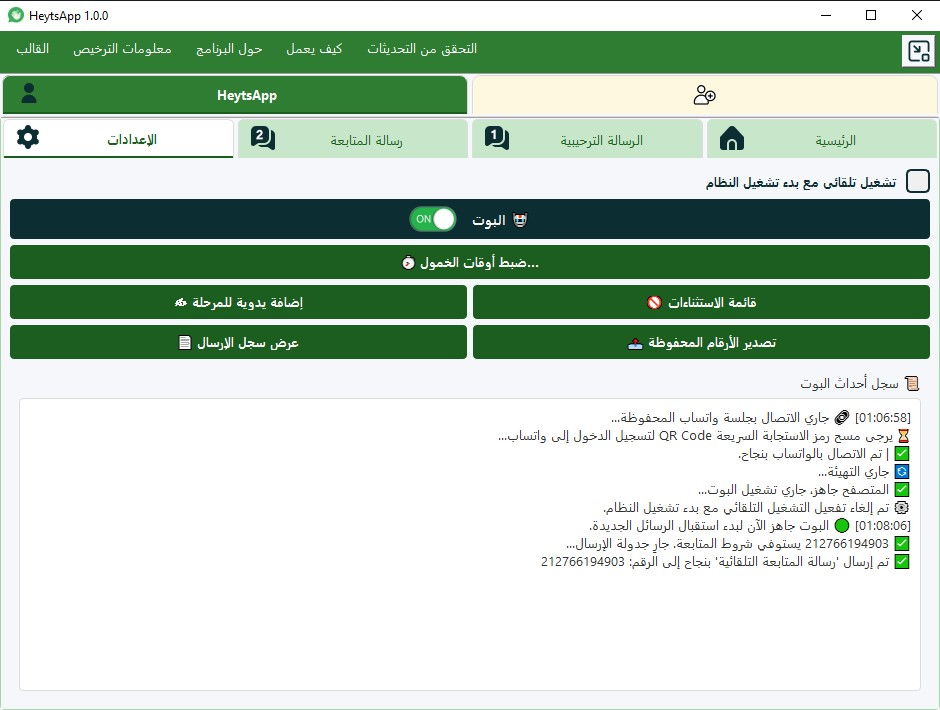

شريكك الرقمي لـتحويل محادثات واتساب إلى أرباح!
هل تجد نفسك غارقًا في عشرات الرسائل اليومية وتفقد السيطرة؟ نقدم لك HeytsApp، الحل الثوري الذي يحول واتساب الخاص بك إلى آلة تسويق ومبيعات ذكية تعمل من أجلك 24/7.
ابدأ في زيادة مبيعاتك اليوم
يثق به أكثر من 100+ مسوق وصاحب متجر في الوطن العربي


0
% زيادة في سرعة الرد
0
% من المبيعات عبر المتابعة
0
ساعة عمل يوميًا
0
+ حسابات في آن واحد
الحل الأمثل لك
مصمم خصيصًا لمواجهة تحدياتك اليومية

المميزات والفوائد
لماذا HeytsApp هو خيارك الأفضل؟
استثمر في وقتك وعملائك. توقف عن مطاردة العملاء، ودع التكنولوجيا الذكية تعمل من أجلك، شاهد كيف يمكن لكل ميزة أن تغير طريقة عملك.


خطوات بسيطة
4 خطوات فقط تفصلك عن أتمتة عملك
لا حاجة لخبرة تقنية، لقد صممنا البرنامج ليكون سهل الاستخدام ومباشرًا. قم بتثبيته وابدأ العمل في دقائق معدودة.



شاهد الفرق
تحوّل من الفوضى إلى النظام والكفاءة
قارن بين طريقة العمل اليدوية المجهدة والطريقة الآلية الذكية التي يقدمها HeytsApp.
قبل HeytsApp (العمل اليدوي)
- ضياع رسائل العملاء في زحمة المحادثات.
- تأخر في الرد يؤدي إلى فقدان عملاء محتملين.
- إهدار ساعات طويلة في نسخ ولصق نفس الردود.
- صعوبة في متابعة العملاء المترددين.
- عدم وجود بيانات واضحة عن أداء المبيعات.
بعد HeytsApp (العمل الآلي)
- رد فوري على كل عميل جديد يترك انطباعًا رائعًا.
- متابعة تلقائية لكل عميل لم يقم بالشراء.
- توفير 90% من وقت الرد على الاستفسارات المتكررة.
- زيادة ملحوظة في نسبة إغلاق الصفقات.
- رؤية واضحة لأداء المبيعات عبر الإحصائيات.